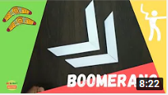
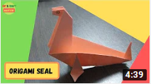

Hi Welcome To My Webpage to see Art And Craft works
"Art And Craft Made Easy"
Here at Art And Craft Webpage, You get a experience though the best Art And Craft Creations by Harsh Agarwal,the maker of Art And Craft
Hi,I am Harsh Agarwal. If your a beginner then this is the right place for you,
look at the pictures below and choose any of the origami which you like, and just click on it, it will redirect you to a youtube page where you will get to see that how to make the origami you like the most.
1. How To Make A Origami boomerang

2. How To Make A Origami seal

3. How To Make A Origami ninja star

4. How To Make A Origami paper boat

5. How To Make A Origami flying plane

 Created by HARSH AGARWAL
Created by HARSH AGARWAL